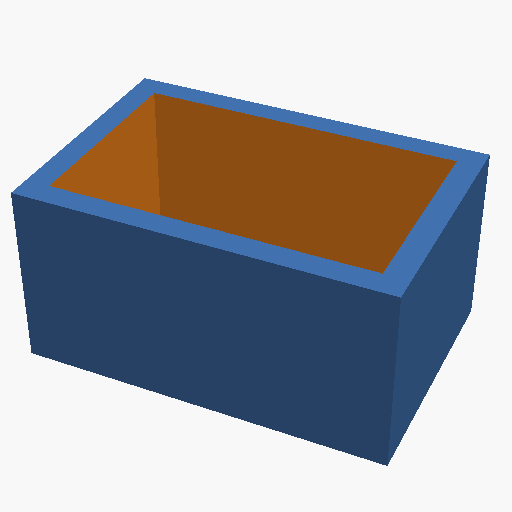
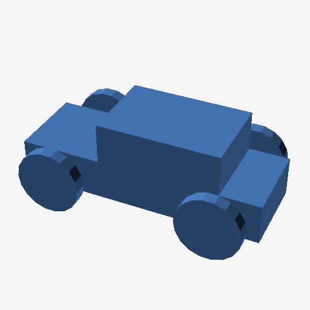
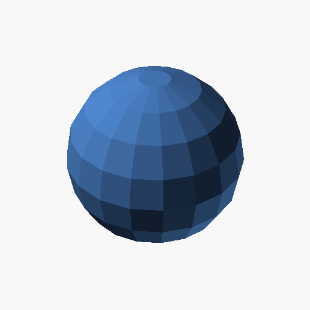
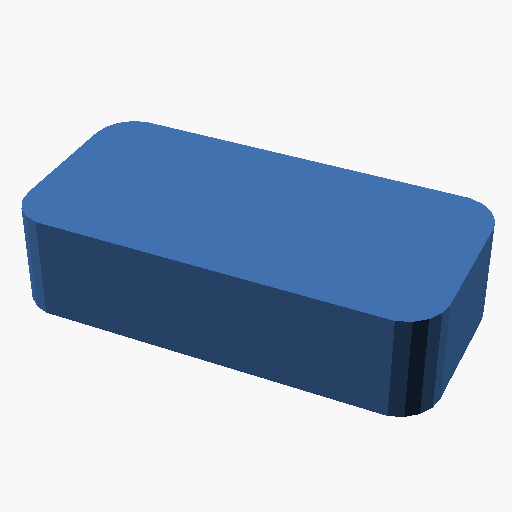
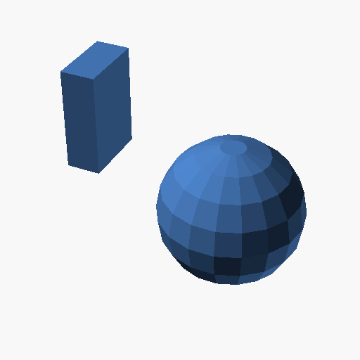

Box
LuaCAD
require("luacad")
function create_box(width, depth, height, thickness)
local outer_shell = cube(width, depth, height)
local inner_cavity = cube(
width - thickness * 2,
depth - thickness * 2,
height - thickness
):translate(thickness, thickness, thickness)
return outer_shell - inner_cavity
end
create_box(30, 20, 15, 2):export("box.scad")Generated OpenSCAD
$fn = 18;
difference() {
union() {
translate([0, 0, 0])
cube([30, 20, 15]);
}
translate([2,2,2]) {
translate([0, 0, 0])
cube([26, 16, 13]);
}
}

Example demonstrating Box functionality.
Car
LuaCAD
require("luacad")
local model = cube { { 60, 20, 10 }, center = true }
+ cube({ { 30, 20, 10 }, center = true }):translate(5, 0, 10 - 0.001)
+ cylinder({ h = 3, r = 8, center = true })
:rotate(90, 0, 0)
:translate(-20, -15, 0)
+ cylinder({ h = 3, r = 8, center = true })
:rotate(90, 0, 0)
:translate(-20, 15, 0)
+ cylinder({ h = 3, r = 8, center = true })
:rotate(90, 0, 0)
:translate(20, -15, 0)
+ cylinder({ h = 3, r = 8, center = true })
:rotate(90, 0, 0)
:translate(20, 15, 0)
+ cylinder({ h = 30, r = 2, center = true })
:rotate(90, 0, 0)
:translate(-20, 0, 0)
+ cylinder({ h = 30, r = 2, center = true })
:rotate(90, 0, 0)
:translate(20, 0, 0)
model:export("car.scad")Generated OpenSCAD
$fn = 18;
translate([-30, -10, -5])
cube([60, 20, 10]);
translate([5,0,9.999]) {
translate([-15, -10, -5])
cube([30, 20, 10]);
}
translate([-20,-15,0]) {
rotate([90,0,0]) {
cylinder(h = 3, r1 = 8, r2 = 8, center = true);
}
}
translate([-20,15,0]) {
rotate([90,0,0]) {
cylinder(h = 3, r1 = 8, r2 = 8, center = true);
}
}
translate([20,-15,0]) {
rotate([90,0,0]) {
cylinder(h = 3, r1 = 8, r2 = 8, center = true);
}
}
translate([20,15,0]) {
rotate([90,0,0]) {
cylinder(h = 3, r1 = 8, r2 = 8, center = true);
}
}
translate([-20,0,0]) {
rotate([90,0,0]) {
cylinder(h = 30, r1 = 2, r2 = 2, center = true);
}
}
translate([20,0,0]) {
rotate([90,0,0]) {
cylinder(h = 30, r1 = 2, r2 = 2, center = true);
}
}

Example demonstrating Car functionality.
Customizer
LuaCAD
require("luacad")
local r = var("Radius of sphere", 9)
local t = var("Translation of sphere", 3)
local h = var("Height of cube", 4)
local rNew = r + 5 + h - 2
local model = cube { size = { 3, 3, 5 } }
+ cube { size = { 1, 2, 3 }, center = true }
+ sphere({ r = r }):translate(t, t, t)
+ sphere { r = rNew }
model:export("customizer.scad")Generated OpenSCAD
$fn = 18;
Radius_of_sphere = 9;
Translation_of_sphere = 3;
Height_of_cube = 4;
translate([0, 0, 0])
cube([3, 3, 5]);
translate([-0.5, -1, -1.5])
cube([1, 2, 3]);
translate([Translation_of_sphere,Translation_of_sphere,Translation_of_sphere]) {
sphere(r = Radius_of_sphere);
}
sphere(r = (((Radius_of_sphere + 5) + Height_of_cube) - 2));

Example demonstrating Customizer functionality.
Difference
LuaCAD
require("luacad")
local model = cube { { 10, 10, 10 }, center = true }
- cylinder { h = 20, r = 3, center = true }
model:export("difference.scad")Generated OpenSCAD
$fn = 18;
difference() {
union() {
translate([-5, -5, -5])
cube([10, 10, 10]);
}
cylinder(h = 20, r1 = 3, r2 = 3, center = true);
}
Example demonstrating Difference functionality.
Gear
LuaCAD
require("luacad")
function gear(num_teeth, height, radius)
local model = cylinder { h = height, r = radius * 0.7 }
-- Create teeth
for i = 1, num_teeth do
local angle = i * (360 / num_teeth)
model = model
+ cad
.cube(radius * 0.3, radius * 0.2, height)
:translate(radius * 0.7, 0, 0)
:rotate(0, 0, angle)
end
return model
end
gear(8, 5, 10):export("gear.scad")Generated OpenSCAD
$fn = 18;
cylinder(h = 5, r1 = 7, r2 = 7);
rotate([0,0,45]) {
translate([7,0,0]) {
translate([0, 0, 0])
cube([3, 2, 5]);
}
}
rotate([0,0,90]) {
translate([7,0,0]) {
translate([0, 0, 0])
cube([3, 2, 5]);
}
}
rotate([0,0,135]) {
translate([7,0,0]) {
translate([0, 0, 0])
cube([3, 2, 5]);
}
}
rotate([0,0,180]) {
translate([7,0,0]) {
translate([0, 0, 0])
cube([3, 2, 5]);
}
}
rotate([0,0,225]) {
translate([7,0,0]) {
translate([0, 0, 0])
cube([3, 2, 5]);
}
}
rotate([0,0,270]) {
translate([7,0,0]) {
translate([0, 0, 0])
cube([3, 2, 5]);
}
}
rotate([0,0,315]) {
translate([7,0,0]) {
translate([0, 0, 0])
cube([3, 2, 5]);
}
}
rotate([0,0,360]) {
translate([7,0,0]) {
translate([0, 0, 0])
cube([3, 2, 5]);
}
}
Example demonstrating Gear functionality.
Rounded Rectangle
LuaCAD
require("luacad")
function rounded_rect(width, height, radius)
local model = circle({ r = radius }):translate(radius, radius, 0)
+ circle({ r = radius }):translate(width - radius, radius, 0)
+ circle({ r = radius }):translate(radius, height - radius, 0)
+ circle({ r = radius }):translate(width - radius, height - radius, 0)
return model:hull()
end
rounded_rect(20, 10, 2) --
:linear_extrude(5)
:export("rounded_rectangle.scad")Generated OpenSCAD
$fn = 18;
linear_extrude(height = 5, twist = 0, slices = 1, scale = 1, center = false) {
hull() {
translate([2,2,0]) {
// circle
translate([0,0,0])
circle(r = 2);
}
translate([18,2,0]) {
// circle
translate([0,0,0])
circle(r = 2);
}
translate([2,8,0]) {
// circle
translate([0,0,0])
circle(r = 2);
}
translate([18,8,0]) {
// circle
translate([0,0,0])
circle(r = 2);
}
}
}

Example demonstrating Rounded Rectangle functionality.
Simple
LuaCAD
require("luacad")
my_cube = cube { size = { 1, 2, 3 } }
function my_sphere(radius)
return sphere({ r = 2 }):translate(5, 0, 0)
end
model = my_cube + my_sphere(2)
model:export("simple.scad")Generated OpenSCAD
$fn = 18;
translate([0, 0, 0])
cube([1, 2, 3]);
translate([5,0,0]) {
sphere(r = 2);
}

Example demonstrating Simple functionality.
Tostring Demo
LuaCAD
require("luacad")
-- Create and print some basic shapes
print("Basic shapes:")
print("- Cube: " .. tostring(cube(10, 10, 10)))
print("- Sphere: " .. tostring(sphere { r = 5 }))
print("- Cylinder: " .. tostring(cylinder { h = 10, r = 5 }))
-- Cylinders with different parameters
print("\nCylinder variations:")
print("- Standard cylinder: " .. tostring(cylinder { h = 10, r = 5 }))
print("- Cylinder with diameter: " .. tostring(cylinder { h = 10, d = 10 }))
print("- Cone (r1, r2): " .. tostring(cylinder { h = 10, r1 = 5, r2 = 2 }))
print("- Cone (d1, d2): " .. tostring(cylinder { h = 10, d1 = 10, d2 = 4 }))
print(
"- Centered cylinder: " .. tostring(cylinder { h = 10, r = 5, center = true })
)
-- Colors
print("\nColored objects:")
local cube = cube(10, 10, 10)
local sphere = sphere { r = 7 }
print("- Red cube: " .. tostring(cube:setcolor("red")))
print("- Blue sphere: " .. tostring(sphere:setcolor("blue")))
print(
"- Green cylinder: "
.. tostring(cylinder({ h = 10, r = 5 }):setcolor("green"))
)
-- TODO: Transformations
-- print("\nTransformations:")
-- local box = cube(10, 10, 10)
-- print("- Original: " .. tostring(box))
-- print("- Translated: " .. tostring(box:translate(5, 5, 0)))
-- print("- Scaled: " .. tostring(box:scale(2, 1, 1)))
-- print("- Rotated: " .. tostring(box:rotate(0, 0, 45)))
-- TODO: CSG Operations
-- print("\nCSG Operations:")
-- local cube = cube(10, 10, 10)
-- local sphere = sphere { r = 7 }
-- print("- Union: " .. tostring(cube + sphere))
-- print("- Difference: " .. tostring(cube - sphere))Generated OpenSCAD
OpenSCAD code not availableExample demonstrating Tostring Demo functionality.